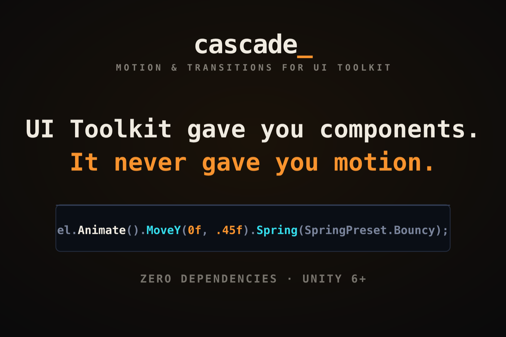
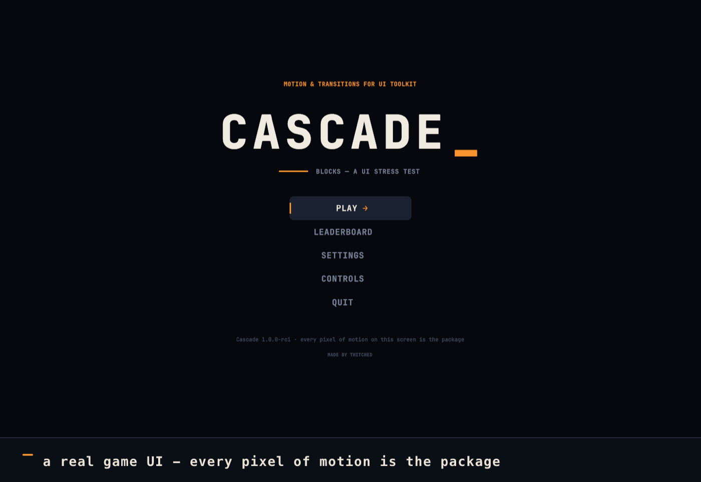
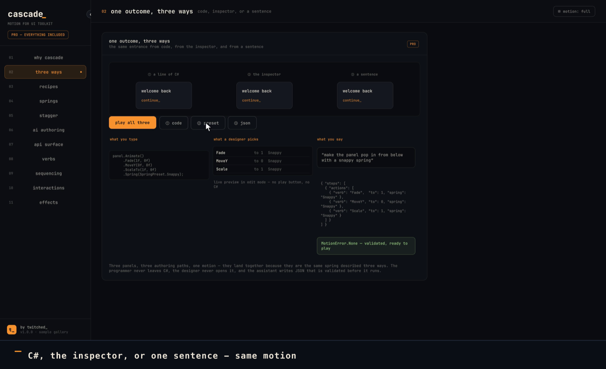

Current work
Cascade — Motion & Transitions for UI Toolkit
UI Toolkit gave you components. It never gave you motion.
Cascade is a runtime motion library for UI Toolkit (UXML/USS): physics springs that keep their velocity through an interruption, timeline sequencing, stagger, named states, enter/exit and screen transitions, and hover/press micro-interactions. Zero third-party dependencies, no native code, Unity 6000.0+.
// the whole API surface is this shape
el.Animate().MoveY(0f, .45f).Spring(SpringPreset.Bouncy);- Three authoring routes — a fluent C# API, an inspector with live edit-mode preview, or validated JSON generated by an AI assistant.
- Lifecycle-safe — never writes to a detached panel; cancellation leaves values where they are rather than snapping.
- Zero per-frame GC, enforced by tests rather than asserted in a readme.

Work samples
Play it in a browser
Cascade Blocks is a falling-block game with no motion code of its own. The menu stagger, the screen transitions, the line-clear sweep, the score count-up and the arcade initials caret are all the package. It exists as a stress test: motion libraries demo well on three buttons and fall apart on a real screen with a game loop competing for frames, so we built the real screen.


Documentation
Cascade ships its docs inside the package, under Documentation~:
a getting-started guide, a recipe book of common UI motion problems, a map from Framer Motion
concepts to Cascade equivalents, a designer workflow, and an AI authoring guide with a JSON
schema. They are readable before you buy, from the package page.
Contact
- see the Asset Store publisher page
- Asset Store
- Twitched on the Unity Asset Store